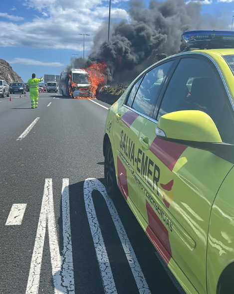
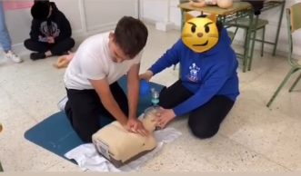

Ein hochqualifiziertes Team, das Unterstützung in kritischen Situationen und im täglichen Pflegebedarf bietet.
Wir bieten einen Notfall-Ambulanzdienst und medizinische Transporte, ausgestattet mit fortschrittlicher Technologie und hochqualifiziertem medizinischem Personal, bereit, jede medizinische Notlage schnell und effizient zu bewältigen.
Personalisierte medizinische Betreuung zu Hause, die Unterstützung in dringenden und nicht dringenden medizinischen Bedürfnissen bietet, um eine schnelle und effektive Versorgung sicherzustellen.
Ein spezialisierter telematischer Unterstützungsdienst, der den Schutz und die Betreuung älterer oder gefährdeter Personen gewährleistet. Die Acuda-Uhr bietet Überwachung von Vitalzeichen, Medikamentenerinnerungen, monatliche Berichte, Notfallhilfe, Geolokalisierung und Perimeterüberwachung.
Bereitstellung medizinischer Einheiten bei Großveranstaltungen zur Bewältigung jeglicher Eventualitäten.

Wir verfügen über ein hochqualifiziertes Team und fortschrittliche Technologie, um Rettungsaktionen in extremen Bedingungen durchzuführen und Sicherheit und Effizienz zu gewährleisten.
Wir bieten Beratung und Unterstützung für von Notlagen betroffene Personen und kümmern uns um die psychosozialen Bedürfnisse von Opfern und deren Familien.
Wir sind spezialisiert auf Rettungsaktionen in verschiedenen Notfallsituationen, um Risiken zu minimieren und die Sicherheit aller Beteiligten zu maximieren.
Unser Team ist hochqualifiziert und ausgerüstet für Rettungsaktionen in schwer zugänglichen Gebieten wie Bergen, Schluchten und rauen Landschaften.
Wir sind vorbereitet auf großflächige Notfälle wie Naturkatastrophen und bieten Rettung, medizinische Versorgung und Soforthilfe.
Besteht aus speziell ausgebildeten Rettungshunden für die Suche nach Personen in Wasser-Notfällen.

Wir entwickeln maßgeschneiderte Sicherheitspläne für Veranstaltungen und managen Risiken effektiv.
Erstellung von Sicherheitsplänen gemäß Dekret 86/2013.
Lizenzierte Notfallteams nutzen Drohnen zur Überwachung von Vorfällen und Gefahrenprävention.

Unterstützung bei der Verkehrsverwaltung in Notfallsituationen und besonderen Veranstaltungen. Wir sind ein Team von Fachleuten, die dafür sorgen, dass der Verkehr reibungslos läuft – also keine Autounfälle oder Staus entstehen. Wir sind bereit, jede Notlage zu bewältigen und Rettungseinsätze auch in den komplexesten Situationen durchzuführen. Dank unserer Ausbildung und Technologie können wir schnell und effizient handeln, wobei die Sicherheit und das Wohl der Menschen oberste Priorität haben.
Eine spezialisierte Ausbildungseinheit für Schulungen im Bereich Notfälle, Rettung und Bergung, um Kompetenzen für effizientes und sicheres Handeln in kritischen Situationen zu erwerben.
- Maßgeschneiderte Kurse: Wir erstellen Kurse und Workshops für Unternehmen, Bildungseinrichtungen und die breite Öffentlichkeit zu Erste Hilfe, CPR und Evakuierungsplänen entsprechend ihren Bedürfnissen.
- Simulationen und Innovation: Praktische Trainings mit moderner Technologie wie Rettungssimulatoren und virtueller Realität.
- Zertifizierungen: Programme, die von anerkannten Organisationen validiert werden.



 ES
ES
 EN
EN
 DE
DE
 FR
FR
 NO
NO
 IS
IS